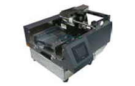

AFB-350Pシリーズ AFB-350P1／AFB-350P2
全業種向け
供給機と卓上型サーマルプリンターを一台にまとめた！
安価な卓上供給装置一体型サーマルプリンター

下ベルトで供給するフィーダーとサーマルプリンターが一体化した卓上型の機種。部品点数を少なくすること少しでも安価にご提供することを可能にしました。
下ベルトで供給するため包材がなくなる前に積み重ねてセットできるので、連続して作業ができます。
印字も日付程度であれば1インチ、一括表示なら2インチを選択できる汎用性のあるプリンターです。
供給推奨ワーク
三方袋(ナイロンポリ、ラミネート、アルミ袋）、紙など比較的厚手のワーク向き
- AFB-350P1 印字エリア 32mm×100mm
- AFB-350P2 印字エリア 53mm×200mm
仕様一覧（出荷国により製品仕様は異なる場合があります。）
AFB-350Pシリーズ
| 製品名 | AFB-350P | |
|---|---|---|
| 型式 | P1 | P2 |
| ヘッド固定式 | ||
| 外形寸法 | ||
| 電源 | AC 100V・150W 50/60Hz | |
| 重量 | ||
| 最大印字エリア | 32mm×100mm | 53.3mm×200mm |
| サーマルリボン | 36×300M | 57×300M |
| 搬送速度 | 150mm～300mm/秒 | |
| 入力方式 | 専用タッチパネル入力装置 又はPC | |
| ワークサイズ | 90～330(W)×90～300(L) | |
| 処理能力 | 15～60枚/分 ※ワークサイズによる | |
| フィード方式 | 下面ベルト搬送 | |
| 印字方式 | 熱転写方式 | |
| 印字解像度 | 300dpi | |
| 積載量 | 50～60mm(MAX高さ) | |
| 動作環境 | 5～40℃ 10～85%(結露なきこと) | |